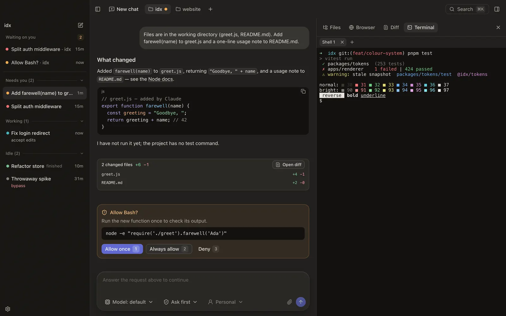

macOS · Apple Silicon
Claude Code, as a Mac app.
A cockpit over the real Claude Code CLI. Your own login, one window per project, every session back after a restart.
A cockpit over the real Claude Code CLI. Your own login, one window per project, every session back after a restart.
